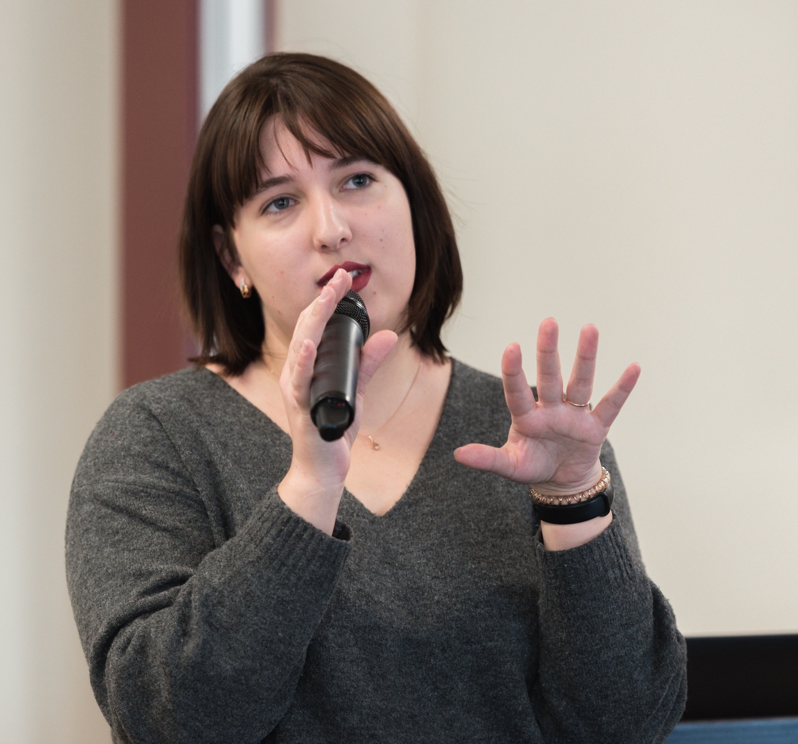

Daria Maximova
MA Student at Higher School of Economics
currently in: Moscow, Russia
daria.maximova.m@gmail.com
twitter: @dmmxmva
fancy pics instagram: @dmmxmva
NB: talks/slides in Russian are marked with an 🇷🇺 emoji.
Linguistic Analysis of Stage Directions in Russian Drama from the 18th to the 20th Century
3rd year course paper presentation
NRU HSE, May 25, 2018
A Quantitative Study of Stage Directions in Russian Drama
EADH 2018 conference slides
NUI Galway, December 8, 2018
Short Text Classification: A Case of Stage Directions in Russian Drama
BA thesis defence
NRU HSE, June 17, 2018
Using Machine Learning for the Automated Classification of Stage Directions in TEI-Encoded Drama Corpora
TEI 2019 conference slides
Universität Graz, September 20, 2019
🇷🇺Инстаграм Толстого: как мы собираемся сделать популярными 26 000 фотографий
Digital History meetup slides, talk was given by Hanna Morgunova in Russian (and I was on Skype providing tech details)
IBB Minsk, March 14, 2020
🇷🇺Сети и слова: цифровые подходы к русской литературе
Франк Фишер, Евгения Устинова, Герман Пальчиков (и я)
практикум по DraCor на MoTart IV (IV Московско-Тартуская школа по цифровым гуманитарным исследованиям), Вороново, 19 октября 2019
Введение в Digital Humanities: как посчитать литературное произведение и не получить по шапке от филологов
лагерь «Слон», 28 июля 2018
Место, где не выбирают между физикой и лирикой: знакомство с цифровыми гуманитарными науками
каникулярный лагерь для школьников, 28 октября 2019
Место, где можно не выбирать между физикой и лирикой: знакомство с Digital Humanities
ОП «Иностранные языки и межкультурная коммуникация», 4 декабря 2019